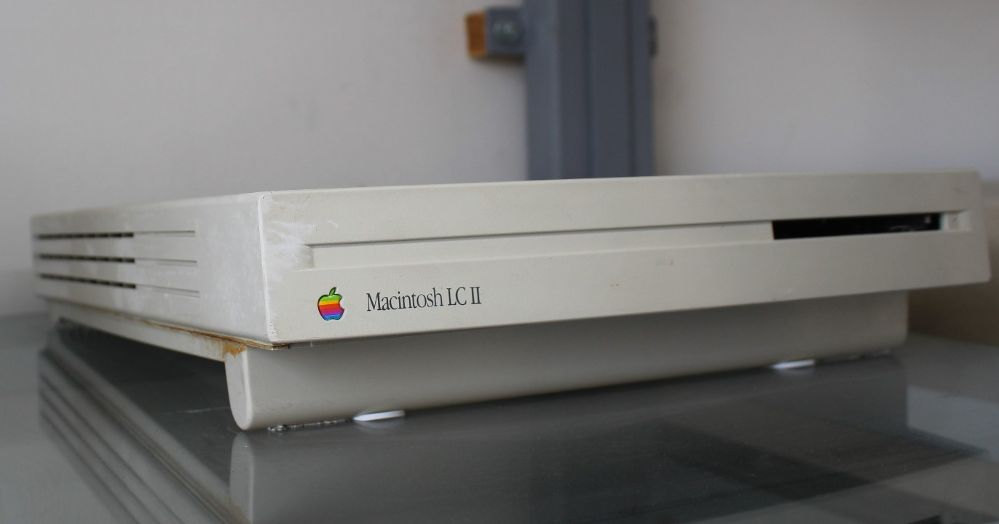

Machintos LC ii

Machintos LC II
A Macintosh LC ii az Apple által tervezett és eladott számítógép. Gyártása 1992 márciusától 1993-ig tartott. Az LC II egy frissítése az eredeti Macintosh LC-nek, új processzort kapott a Motorola 68020 processor helyett egy újjab 68030 modellt kapott emellet a memóriát is 4 MB-tal növelték. Az LC II-es $1,699-ba került pont $800-al kevesebb mint az eredeti LC megjelenésekor. 1992 Szeptemberében az Apple bemutatta a “Macintosh Performa” családot ami átlag felhasználó orientált volt. Az LC II új nevet kapott : Performa 400. Az LC ii-t 1993-ban váltották le a következő modellel az LC iii-mal , ezután befejezték az LC ii árusítását Észak-Amerikában, és két új Performa modellt (a 405 és a 430) hoztak be a helyére. Októberben, a Performa 400, 405 és 430 gyártását befejezték és egy új LC II-alapú model lépett a helyébe név szerint a Performa 410, ez lett az új belépő szintű Apple számítógép. Az LC II az Apple legsikeresebb Macintosh terméke volt 1992-ben.| Processzor | 68030 |
| Ház | "Pizza doboz" forma, hófehér |
| Alaplap | 16-bites, megegyezik az eredeti LC-vel |
| Tárhely | 40MB vagy 80MB floppy tárhely |
| Videó tárhely | 256kb vagy 512kb |